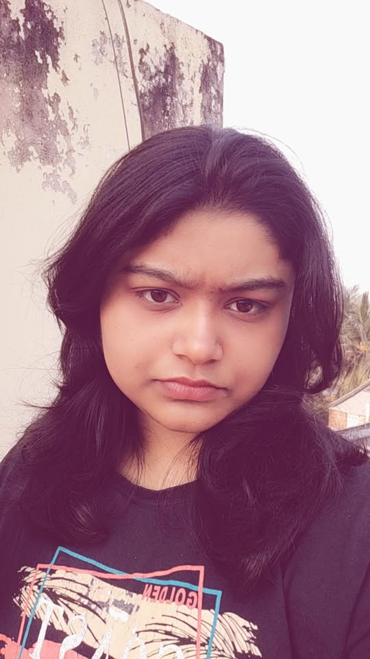
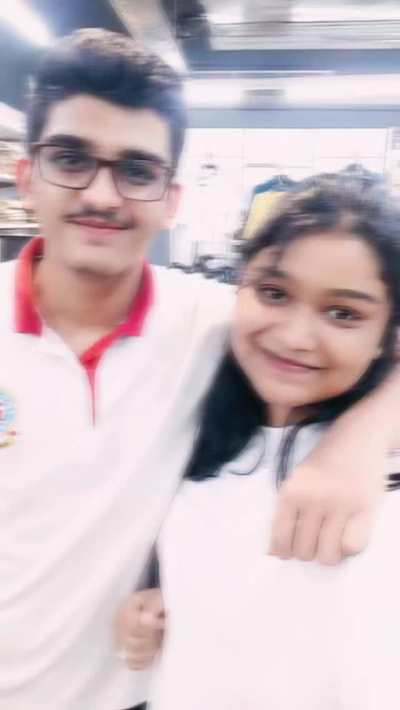
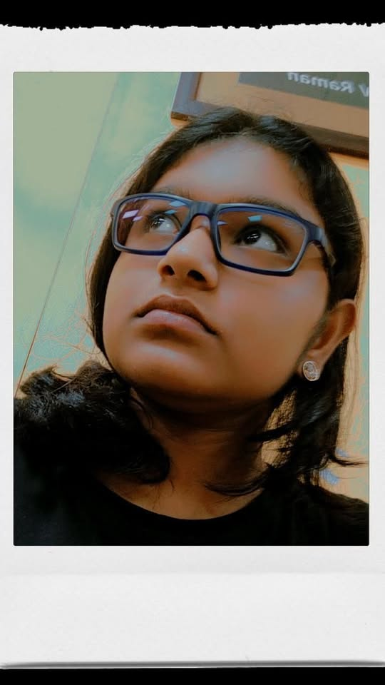
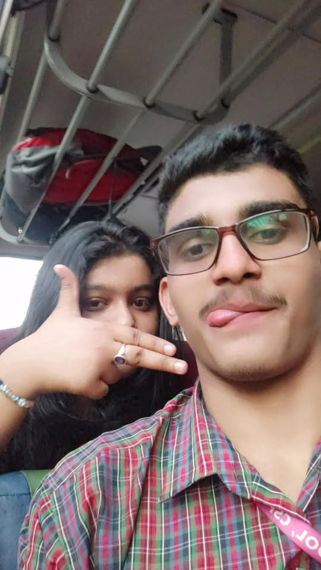

System Directory • Version 2.0 • The Absolute Love of My Life
A completely irreplaceable soul characterized by an infectious, room-brightening laugh, unmatched kindness, and a devastatingly cute smile that instantly resets the author's stress levels to zero. Highly prone to making my world infinitely brighter just by existing in it.
Possesses a distinct, incredibly tiny sneeze sequence that sounds exactly like a kitten trying to activate a laser pointer. It is officially documented as the cutest sound in the known universe and must be protected at all costs.

Triggered instantly when she is denied her favorite snacks, or when teased just a little bit too much. Symptoms include furrowed eyebrows, crossing arms, and an un-ignorable level of cuteness. High probability of melting the author's heart on impact.
Prone to turning into an invincible, tightly-wrapped blanket burrito within minutes of hitting the bed. Will fiercely defend her side of the bed and steal all pillows without conscious remorse during cold nights.
Highly responsive to hot fries, chocolates, and late-night ice cream runs. Possesses a secret secondary stomach reserved exclusively for desserts, regardless of how full she claims to be after dinner.
Thrives in rainy, overcast afternoons, wrapped in oversized hoodies with a warm cup of coffee. Loves getting lost in deep, winding conversations about life, stars, and everything in between for hours on end.


The exact moment our paths crossed. It felt completely unexpected, but looking back, it was the universe executing a flawless plan. I didn't know it yet, but my life had just changed forever.
Whether it's a random sweet message in the middle of a busy day or the way she reaches out to hold my hand while walking—her smallest gestures are always the ones that mean the absolute most to me.

Beyond her gorgeous looks, she possesses an incredible creative mind and an unmatched emotional intelligence. She remembers the tiny details nobody else notices and makes everyone around her feel safe and loved.
A highly encrypted vocabulary of completely meaningless words, weird sound effects, and funny faces that make absolutely zero sense to the rest of the world, but make us laugh until our stomachs hurt.